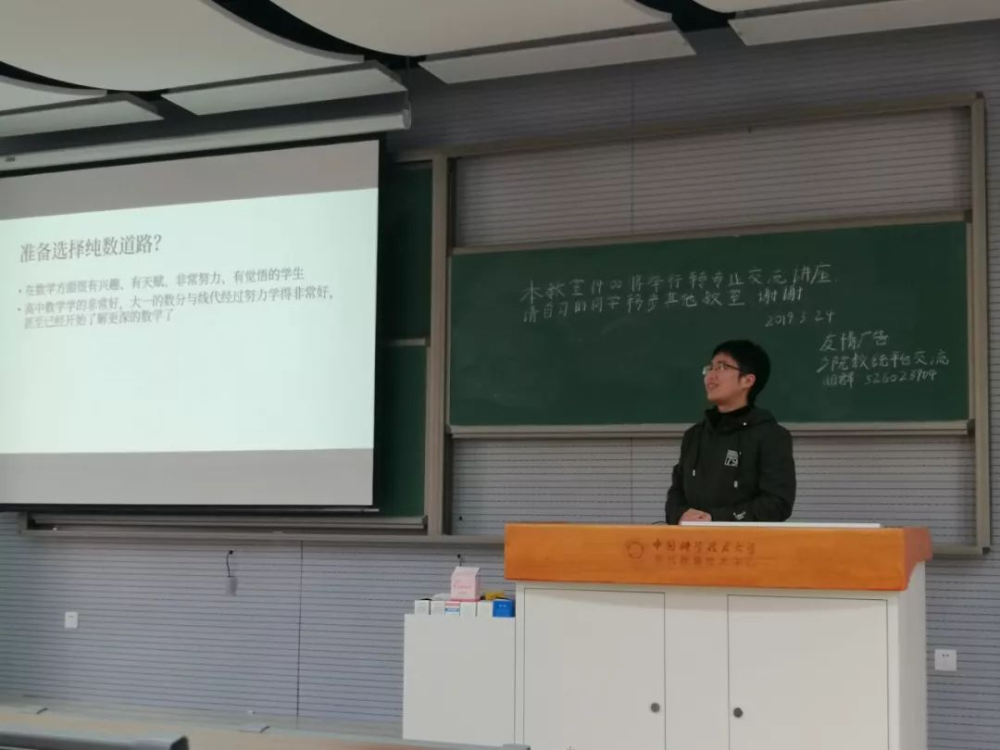
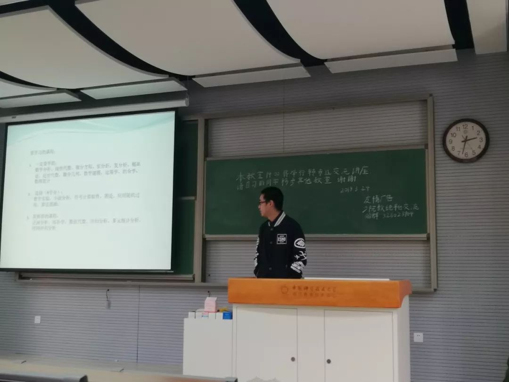
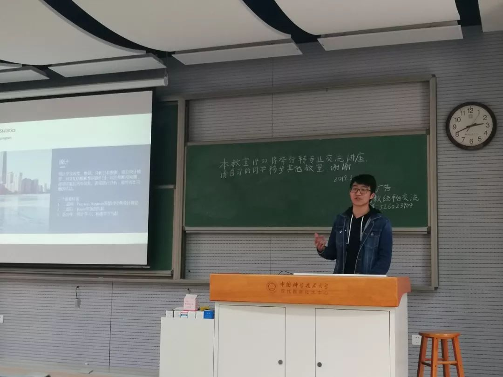
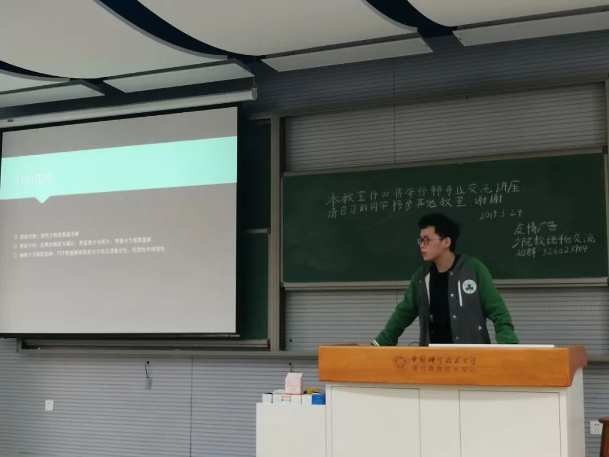

发布时间:2019-03-24
数统专业经验交流会顺利举办
3月24日下午，数学与统计转专业交流会在2105顺利举行，四位学长为我们就数学和统计进行了介绍。
首先，杨洪权学长向我们介绍基础数学专业。学长先为我们介绍了基础数学所包含的内容与其和应用数学的差别进行辨析，并且就基础数学的主流方向和主要就业面进行了介绍。之后，学长大致介绍了学基础数学学生所需要的特质，例如自主性等。为了让同学们理性选择专业，学长也为我们介绍了应该如何检测自己是否适合这个专业以及这个专业在深造就业等方面的一些困难。之后，学长向我们展示了许多人学习基础数学的理由，以及它对于向各个行业转行都有着基础的作用。最后，学长为我们介绍了基础数学的前程并鼓励同学们如果对这个专业感兴趣，一定要趁着年轻朝着自己的目标去努力。

之后，徐凯铭学长为我们介绍应用数学专业。首先，他向同学们展示了他在应用数学专业大学四年的充实生活和他对这个专业的感受。然后，学长向我们推荐了一些对应用数学用处较大的课程，并展示了应用数学的主要内容。学长还补充道，应用数学专业除了要学习本专业的内容外，还要对统计学和计算机科学的知识广泛的了解。知道同学们都有着出国的目标，最后，向同学们展示了国际上应用数学专业的大学排行。

接下来，田野学长为我们介绍了统计专业。看到同学们对统计并不是很了解，学长率先为我们介绍了什么是统计、统计的历史还有统计与经济、计算机等行业的结合。“一切事物的根源都是统计”，学长这样说道，学长向我们介绍了统计和概率的主要研究领域、就业领域以及统计与各个领域的结合所产生的众多成果。学长向我们展示了科大的课程内容以及校友、资源等方面的优势。之后为我们介绍了毕业后统计专业在深造、出国、就业等方面的优越前景。就出国申请和保研的流程，学长向我们介绍四年的应该如何安排好学业与生活，以及他的选择心路历程。最后，学长对专业选择给出了他的见解与看法。

最后，陈予诺学长为我们介绍计算数学。首先学长为我们介绍了计算数学的核心课程与主要内容。学长通过对各个方向的有趣例子进行介绍极大地调动了同学们的兴趣。学长着重介绍了计算数学在游戏动画等同学感兴趣的方面的应用。最后，学长向同学们介绍了这个专业的毕业后的发展方向。

本次转专业交流会，同学们收获颇丰，本次活动不仅让同学们更加了解数学和统计的情况与特色，对同学们即将到来的专业选择提供了不少有用的信息，同时也激励着同学们去选择自己的目标并为之奋斗。
—by.SCGY-SU—

编辑：逍遥游